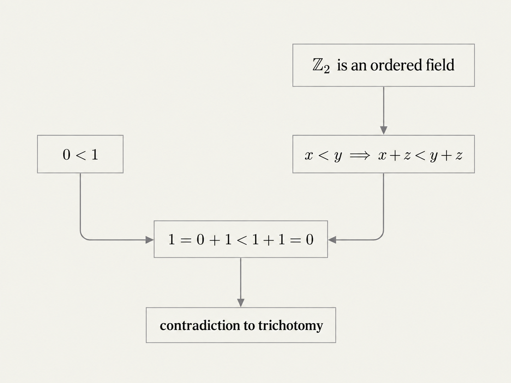
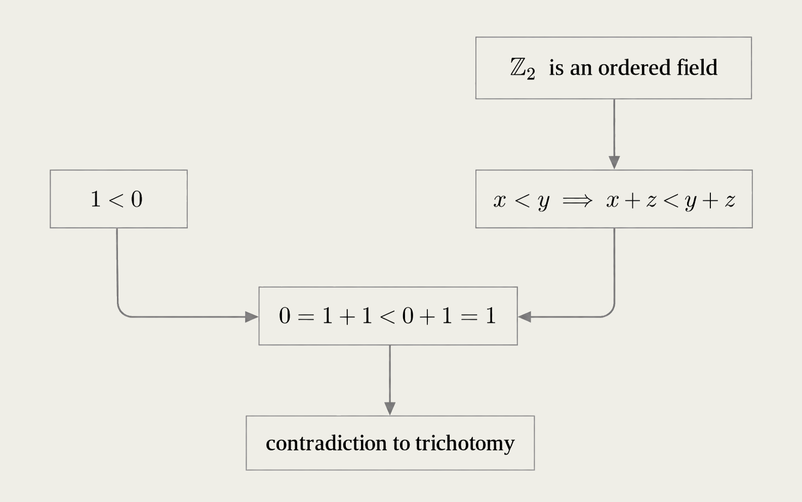
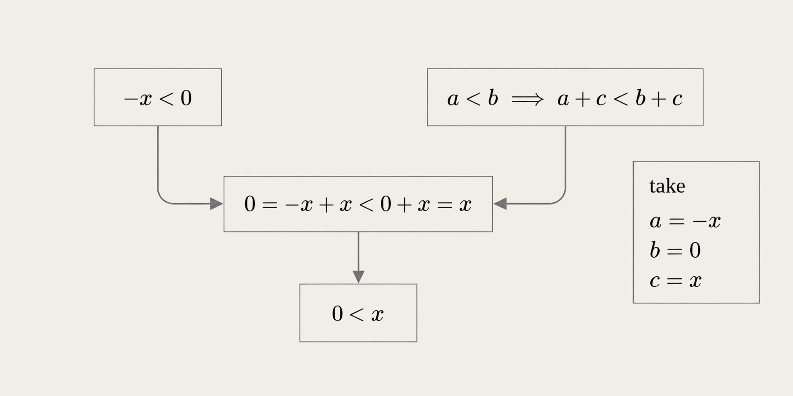
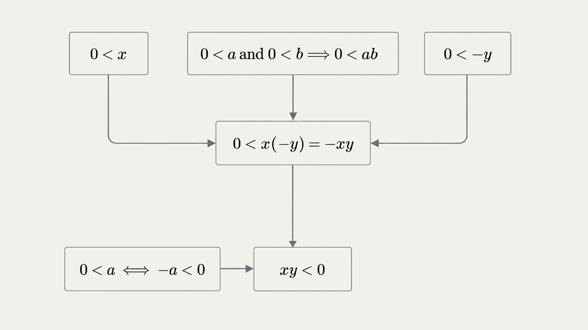
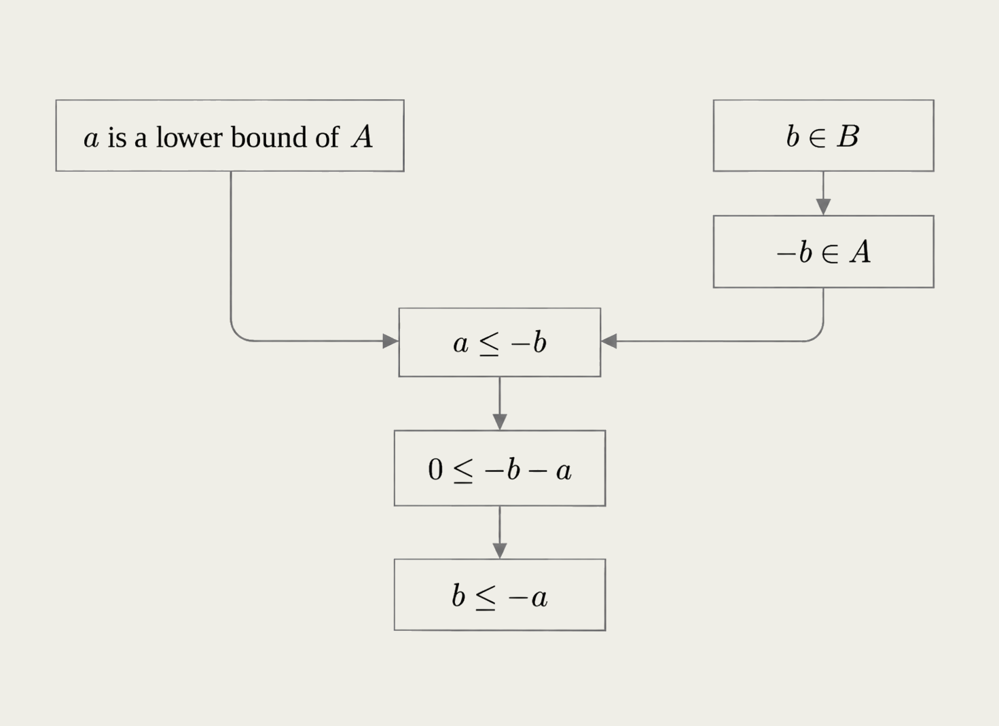
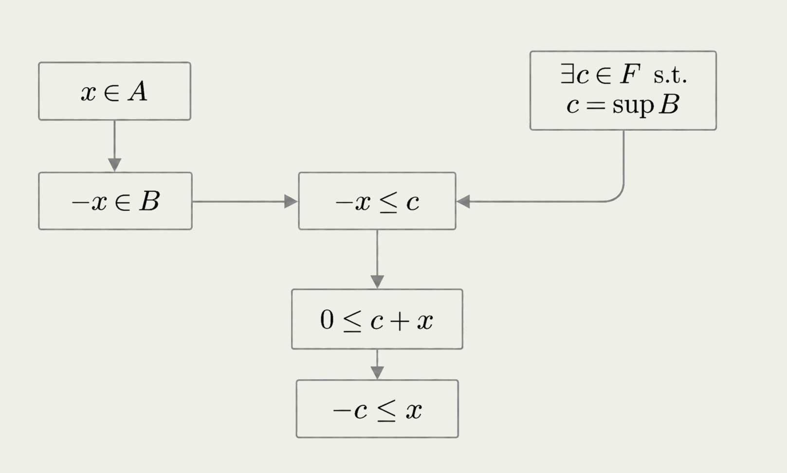
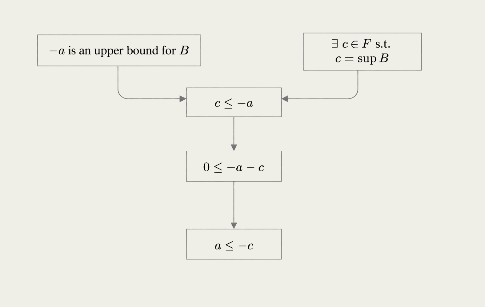
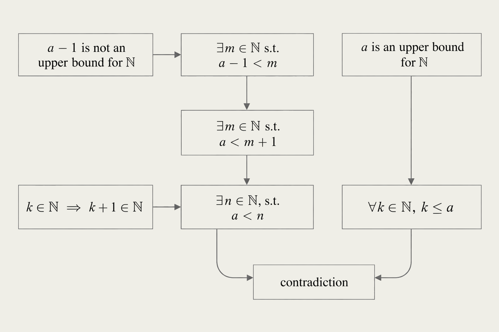
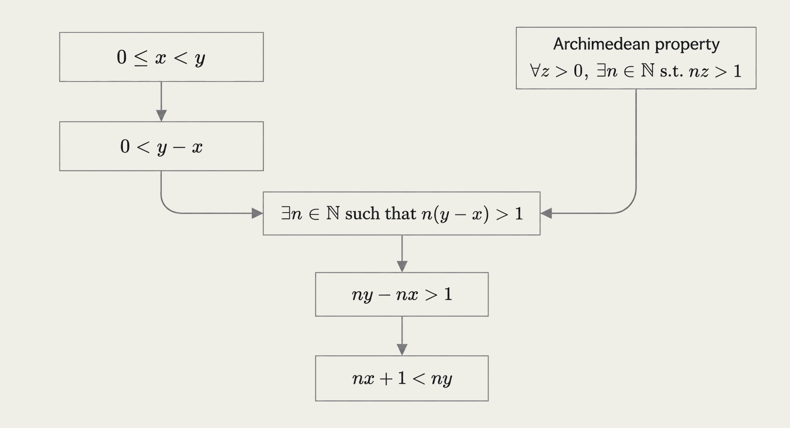
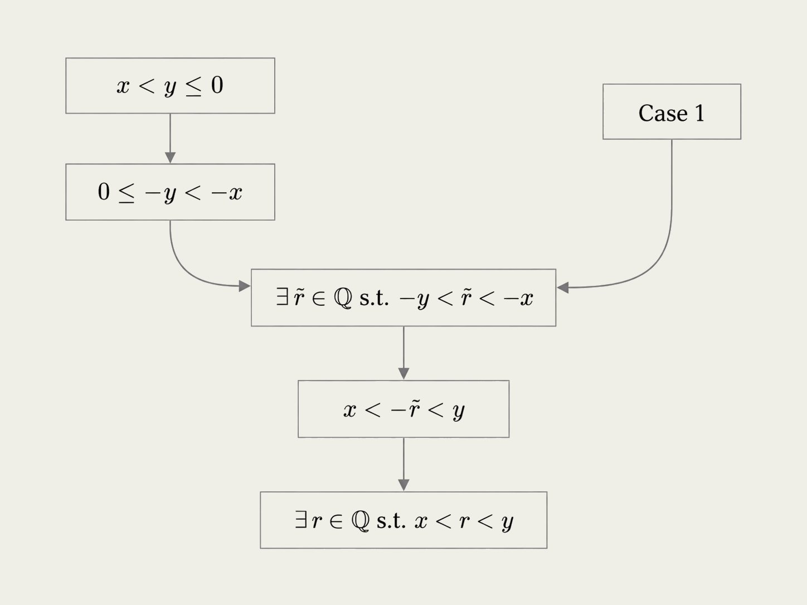

├── mathematical-induction/
├── statement/
Let \(P(n)\) be a statement depending on \(n \in \mathbb{N}\).
Assume:
- Base case: \(P(1)\) is true.
- Inductive step: For every \(m\in\mathbb{N}\), if \(P(m)\) is true, then \(P(m+1)\) is true.
Then
\[ P(n) \text{ is true for every } n \in \mathbb{N}. \]Remark. In the inductive step, \(P(m)\) is called the induction hypothesis.
Let
\[ P(n):\quad 2^n\geq n+1,\qquad n\in\mathbb{N}. \]Base case. Verify \(P(1)\) is true. Indeed \(2^1=2\geq 1+1\).
Inductive step. Verify \(P(m)\Rightarrow P(m+1)\).
We thus assume the induction hypothesis \(P(m)\) is true, i.e., \(2^m\geq m+1\), and prove \(P(m+1)\).
Observe \(P(m)\) being true implies
\[ 2^{m+1}=2\cdot 2^m\geq 2(m+1)\geq m+2. \]Thus \(P(m+1)\) is true.
Conclusion: \(2^n\geq n+1\) for \(n\in\mathbb{N}\), by mathematical induction.
Remark. To prove mathematical induction, we appeal to the well-ordering property of \(\mathbb{N}\) and proof by contradiction.
├── well-ordering-property/
Recall:
\[ \mathbb{N}=\{1,2,3,\ldots\}. \]\(\mathbb{N}\) is ordered:
\[ 1<2<3<\cdots. \]Well-ordering property. If \(S\subset\mathbb{N}\) is nonempty, then \(S\) has a least element.
That is, there exists \(x\in S\) such that
\[ x\leq y \qquad \text{for every } y\in S. \]We take the well-ordering property as an axiom: a basic property of \(\mathbb{N}\) that we assume without proof.
├── proof-by-contradiction/
To prove a statement by contradiction:
- Assume the statement is false.
- Derive a contradiction.
- Conclude that the original statement is true.
Example
Theorem. \(\sqrt{2}\notin\mathbb{Q}\).
Proof. Suppose, for contradiction, that \(\sqrt{2}=\frac{p}{q}\in\mathbb{Q}\) in lowest terms.
Then \(p^2=2q^2\), so \(p^2\) is even, hence \(p\) is even.
Why? If \(k^2\) is even, then \(k\) is even. There are two standard ways to see this:
- Euclid's lemma. Since \(2\mid k^2=k\cdot k\) and \(2\) is prime, Euclid's lemma gives \(2\mid k\). Hence \(k\) is even.
- Elementary parity argument. If \(k\) were odd, then \(k=2m+1\) for some integer \(m\), and \[ k^2=(2m+1)^2=2(2m^2+2m)+1, \] which is odd, a contradiction.
Either argument proves that \(k^2\) even implies \(k\) even. The second simply uses a short contradiction inside the larger proof by contradiction.
Write \(p=2k\).
Then \(q^2=2k^2\), so \(q^2\) is even, hence \(q\) is even.
Thus \(p\) and \(q\) are both even and therefore divisible by \(2\).
This contradicts that \(\frac{p}{q}\) was in lowest terms.
Therefore \(\sqrt{2}\notin\mathbb{Q}\). \(\square\)
├── proof-of-induction/
Let
\[ S:=\{n\in\mathbb{N}\mid P(n)\text{ is false}\}. \]We want to show
\[ S=\emptyset. \]Suppose, for contradiction, that
\[ S\neq\emptyset. \]Proof idea: use the well-ordering property of \(\mathbb{N}\) to show that the smallest member of \(S\) both belongs and does not belong to \(S\), thereby furnishing a contradiction.
By the well-ordering property of \(\mathbb{N}\), \(S=\{n\in\mathbb{N}\mid P(n)\text{ is false}\}\) has a least element \(m\).
By the assumption \(P(1)\) is true (i.e., the base case),
\[ m\neq 1, \]so
\[ m>1. \]In particular \(m-1\in\mathbb N\).
Since \(m\) is the least element of \(S\), \(m-1\notin S\), so again \(m-1\leq nx\).
\[ m-1\notin S. \]Since
\[ S=\{n\in\mathbb{N}\mid P(n)\text{ is false}\} \]and \(m-1\notin S\), it follows that
\[ P(m-1)\text{ is true}. \]By the assumption that \(P(n)\Rightarrow P(n+1)\) for every \(n\in\mathbb{N}\) (i.e., the induction step), taking \(n=m-1\),
\[ P(m)\text{ is true}. \]Therefore
\[ m\notin S,\qquad S=\{n\in\mathbb N\mid P(n)\text{ is false}\}. \]But \(m\in S\). Contradiction.
Thus
\[ S=\{n\in\mathbb{N}\mid P(n)\text{ is false}\}=\emptyset. \]Therefore
\[ P(n)\text{ is true for every }n\in\mathbb{N}. \]├── example-1/
Theorem. For \(c\neq 1\) and \(n\in\mathbb{N}\),
\[ 1+c+c^2+\cdots+c^n=\frac{1-c^{n+1}}{1-c}. \]Proof. We use induction on \(n\).
To begin: What is the base case?
Base case: \(n=1\).
If \(n=1\), then
\[ 1+c+\cdots+c^n=1+c, \]and
\[ \frac{1-c^{n+1}}{1-c} =\frac{1-c^2}{1-c} =\frac{(1-c)(1+c)}{1-c} =1+c. \]Thus the base case holds:
\[ 1+c+\cdots+c^n=\frac{1-c^{n+1}}{1-c}\qquad \text{when } n=1. \]Induction hypothesis: Fix an arbitrary \(m\in\mathbb{N}\) and assume the identity holds for \(m\):
\[ 1+c+c^2+\cdots+c^m=\frac{1-c^{m+1}}{1-c}. \]Need to show the induction hypothesis implies
\[ 1+c+c^2+\cdots+c^m+c^{m+1}=\frac{1-c^{m+2}}{1-c}. \]Inductive step:
Using the induction hypothesis, we obtain
\[ \begin{aligned} 1+c+c^2+\cdots+c^m+c^{m+1} &=\textcolor{red}{(1+c+c^2+\cdots+c^m)}+c^{m+1}\\ &=\textcolor{red}{\frac{1-c^{m+1}}{1-c}}+c^{m+1}\\ &=\frac{1-c^{m+1}+c^{m+1}(1-c)}{1-c}\\ &=\frac{1-c^{m+2}}{1-c}. \end{aligned} \]Thus the identity holds for \(m+1\).
Having proved the base case and inductive step, mathematical induction gives
\[ 1+c+c^2+\cdots+c^n=\frac{1-c^{n+1}}{1-c} \]for every \(n\in\mathbb{N}\).
└── example-2/
Theorem. If \(c\geq -1\), then
\[ (1+c)^n\geq 1+nc \]for every \(n\in\mathbb{N}\).
Proof. We use induction on \(n\).
To begin: What is the base case?
Base case: \(n=1\).
If \(n=1\), then
\[ (1+c)^n=1+c, \]and
\[ 1+nc=1+c. \]Thus the base case holds:
\[ (1+c)^n\geq 1+nc\qquad \text{when } n=1. \]Induction hypothesis: Fix an arbitrary \(m\in\mathbb{N}\) and assume the inequality holds for \(m\):
\[ (1+c)^m\geq 1+mc. \]Need to show the induction hypothesis implies
\[ (1+c)^{m+1}\geq 1+(m+1)c. \]Inductive step:
Since \(c\geq -1\), we have \(1+c\geq 0\). Using the induction hypothesis, we obtain
\[ \begin{aligned} (1+c)^{m+1} &=(1+c)^m(1+c)\\ &\geq(1+mc)(1+c)\\ &=1+(m+1)c+mc^2\\ &\geq 1+(m+1)c. \end{aligned} \]Thus the inequality holds for \(m+1\).
Having proved the base case and inductive step, mathematical induction gives
\[ (1+c)^n\geq 1+nc \]for every \(n\in\mathbb{N}\).
├── cardinality-and-countability/
├── fundamental-question/
Which sets have “more” elements?
\[ \{1,2,3\},\qquad \mathbb N,\qquad \{\text{even integers}\},\qquad \mathbb Q,\qquad \mathbb R,\qquad \mathbb R^3? \]Which have the same number of elements?
There are many ways to measure the “size” of a set. The most fundamental for our purposes is cardinality.
Cardinality formalizes the idea of comparing the number of elements in two sets.
This section develops this notion of size.
├── functions/
Let \(A\) and \(B\) be sets.
A function
\[ f:A\to B \]assigns each \(x\in A\) to a unique element of \(B\), denoted \(f(x)\).
We call \(A\) and \(B\) the domain and codomain of \(f\), respectively.
We say that \(x\) is mapped to \(f(x)\).
Remark. In this formalization, we are taking care to view a function as having a specified domain and codomain. In particular, the two functions
\[ \begin{aligned} f:[0,1]&\to\mathbb{R}, & f(x)&=x^2,\\ g:\mathbb{R}&\to\mathbb{R}, & g(x)&=x^2 \end{aligned} \]are not the same function.
Let \(C\subset A\). The image of \(C\) under \(f:A\to B\) is
\[ f(C):=\{y\in B:y=f(x)\text{ for some }x\in C\}. \]So \(f(C)\) is the set of outputs obtained from elements of \(C\).
Let \(D\subset B\). The preimage of \(D\) under \(f:A\to B\) is
\[ f^{-1}(D):=\{x\in A:f(x)\in D\}. \]So \(f^{-1}(D)\) is the set of inputs that are mapped into \(D\).
Let
\[ A=\{-2,-1,0,1,2\},\qquad B=\{0,1,2,3,4,5\}. \]Define \(f:A\to B\) by \(f(x)=x^2\).
Then
\[ f(A)=\{0,1,4\},\qquad f^{-1}(\{2,3\})=\emptyset,\qquad f^{-1}(\{4\})=\{-2,2\}. \]├── injective-surjective-bijective-functions/
Let \(A\) and \(B\) be sets and let
\[ f:A\to B \]be a function.
There are three fundamental types of functions: injections, surjections and bijections.
\(f\) is injective or one-to-one (1-1) if
\[ f(x_1)=f(x_2)\implies x_1=x_2. \]\(f\) is surjective or onto if
\[ f(A)=B. \]\(f\) is bijective if it is both injective and surjective.
If \(f:A\to B\) is bijective, then there is an inverse function
\[ f^{-1}:B\to A \]which assigns each \(y\in B\) to the unique \(x\in A\) such that
\[ f(x)=y. \]Thus,
\[ f\bigl(f^{-1}(y)\bigr)=y. \]Common notation:
\[ \begin{aligned} f:A\hookrightarrow B &\qquad \text{injection},\\ f:A\twoheadrightarrow B &\qquad \text{surjection},\\ f:A\xrightarrow{\sim} B &\qquad \text{bijection}. \end{aligned} \]Warning. In these notes, \(f^{-1}\) denotes the inverse function when it exists. For a set \(D\subset B\), \(f^{-1}(D)\) denotes the preimage of \(D\); if \(f\) is bijective, this is equivalently the image of \(D\) under the inverse map \(f^{-1}:B\to A\).
├── cardinality/
When do two sets have the same size?
Cantor's idea: two sets have the same size when we can pair each element of one set with a unique element of the other.
We say sets \(A\) and \(B\) have the same cardinality if there exists a bijection
\[ f:A\to B. \]We write
\[ |A|=|B| \]to indicate that \(A\) and \(B\) have the same cardinality.
Definition. A set \(A\) is finite if \(A=\emptyset\), or if
\[ |A|=\bigl|\{1,2,\ldots,n\}\bigr| \]for some \(n\in\mathbb{N}\). In the latter case, we write
\[ |A|=n. \]We write
\[ |\emptyset|=0. \]For a finite set \(A\), it is also common to write
\[ \#A \]for \(|A|\).
Definition. For sets \(A\) and \(B\), define
\[ |A|\leq |B| \quad\Longleftrightarrow\quad \text{there exists an injection }f:A\to B. \]Similarly, define
\[ |A|<|B| \quad\Longleftrightarrow\quad |A|\leq |B|\text{ and }|A|\neq |B|. \]Given \(A\subset B\subset\mathbb R\), define the function
\[ f_{A,B}:A\to B,\qquad f_{A,B}(x)=x. \]Observe that \(f_{A,B}\) is always injective.
Since
\[ \{1,2,3\}\subset\mathbb N\subset\mathbb Z\subset\mathbb Q\subset\mathbb R, \]we may use \(f_{A,B}\) with suitably chosen \(A\) and \(B\) to conclude
\[ |\{1,2,3\}|\leq|\mathbb N|\leq|\mathbb Z|\leq|\mathbb Q|\leq|\mathbb R|. \]├── cantor-schroder-bernstein/
If
\[ |A|\leq |B| \]and
\[ |B|\leq |A|, \]then
\[ |A|=|B|. \]Equivalently, if there exists an injection \(f:A\to B\) and an injection \(g:B\to A\), then there exists a bijection between \(A\) and \(B\).
Finding an explicit bijection between two sets may be difficult.
The Cantor–Schröder–Bernstein theorem lets us instead prove that two sets have the same cardinality by finding an injection in each direction.
We claim
\[ |[0,1]|=|(0,1)|. \]Define
\[ f:(0,1)\to[0,1],\qquad f(x)=x, \]noting that \(f\) is injective. Hence
\[ |(0,1)|\leq |[0,1]|. \]Conversely, define
\[ g:[0,1]\to(0,1),\qquad g(x)=\frac{x+1}{3}. \]Then \(g\) is injective, with
\[ g([0,1])=\left[\frac13,\frac23\right]\subsetneq(0,1). \]Hence
\[ |[0,1]|\leq |(0,1)|. \]Therefore, by Cantor–Schröder–Bernstein,
\[ |[0,1]|=|(0,1)|. \]One explicit bijection \(h:[0,1]\to(0,1)\) is
\[ h(x)= \begin{cases} \frac12, & x=0,\\[2mm] \frac13, & x=1,\\[2mm] \frac{1}{n+2}, & x=\frac1n,\quad n\geq 2,\\[2mm] x, & \text{otherwise}. \end{cases} \]This shifts the sequence
\[ 0,\ 1,\ \frac12,\ \frac13,\ \frac14,\ldots \]into
\[ \frac12,\ \frac13,\ \frac14,\ \frac15,\ \frac16,\ldots \]and fixes every other point.
├── countability/
A set \(A\) is countably infinite if
\[ |A|=|\mathbb{N}|. \]That is, \(A\) is countably infinite if there exists a bijection
\[ f:\mathbb{N}\to A. \]A set \(A\) is countable if it is either
- finite, or
- countably infinite.
If \(A\) is not countable, then \(A\) is uncountable.
We will see later that \(|\mathbb{N}|<|\mathbb{R}|\); i.e., \(\mathbb{R}\) is uncountable.
A natural question is:
Is there a set \(A\) whose cardinality lies strictly between that of \(\mathbb{N}\) and \(\mathbb{R}\)?
That is, can we have
\[ |\mathbb{N}|<|A|<|\mathbb{R}|? \]The Continuum Hypothesis says that no such set exists.
└── examples/
Show that the set of even positive integers
\[ E:=\{2n:n\in\mathbb N\} \]is countably infinite.
Define
\[ f:\mathbb N\to E,\qquad f(n)=2n. \]If \(f(n)=f(m)\), then \(2n=2m\), so \(n=m\). Thus \(f\) is injective.
If \(y\in E\), then \(y=2n=f(n)\) for some \(n\in\mathbb N\). Thus \(f\) is surjective.
Hence \(f\) is a bijection and
\[ |E|=|\mathbb N|. \]Remark. The odd positive integers are countably infinite by the same argument, using \(n\mapsto 2n-1\).
Show that \(\mathbb Z\) is countably infinite.
Define \(f:\mathbb N\to\mathbb Z\) by
\[ f(2k)=k,\qquad f(2k-1)=-(k-1),\qquad k\in\mathbb N. \]Thus \(f\) enumerates
\[ 0,1,-1,2,-2,3,-3,\ldots \]and is a bijection. Therefore
\[ |\mathbb Z|=|\mathbb N|. \]Show that \(\mathbb N\times\mathbb N\) is countably infinite.
First, group the pairs in \(\mathbb N\times\mathbb N\) according to the value of \(m+n\):
\[ \begin{aligned} m+n=2:&\quad (1,1),\\ m+n=3:&\quad (2,1),(1,2),\\ m+n=4:&\quad (3,1),(2,2),(1,3),\\ m+n=5:&\quad (4,1),(3,2),(2,3),(1,4),\\ &\quad \vdots \end{aligned} \]These groups are the diagonals of \(\mathbb N\times\mathbb N\). Enumerate the pairs one diagonal at a time, increasing \(n\) within each diagonal:
\[ (1,1)\mapsto1,\quad (2,1)\mapsto2,\quad (1,2)\mapsto3,\quad (3,1)\mapsto4,\quad\ldots \]This enumeration is given by the Cantor pairing map \(\pi:\mathbb N\times\mathbb N\to\mathbb N\):
\[ \pi(m,n) :=\frac{(m+n-2)(m+n-1)}{2}+n. \]For a fixed value of \(m+n\), the formula assigns consecutive natural numbers to all pairs in that diagonal. Every pair appears on exactly one diagonal, and every natural number occurs exactly once.
Thus \(\pi\) is a bijection, and therefore
\[ |\mathbb N\times\mathbb N|=|\mathbb N|. \]├── size-order-and-completeness/
├── power-sets/
If \(A\) is a set, define its power set by
\[ \mathcal{P}(A)=\{B:B\subset A\}. \]That is, \(\mathcal{P}(A)\) is the set of all subsets of \(A\).
If \(A=\emptyset\), then
\[ \mathcal{P}(A)=\{\emptyset\}. \]If \(A=\{1\}\), then
\[ \mathcal{P}(A)=\{\emptyset,\{1\}\}. \]If \(A=\{1,2\}\), then
\[ \mathcal{P}(A)=\{\emptyset,\{1\},\{2\},\{1,2\}\}. \]In general, if \(|A|=n\), then
\[ |\mathcal{P}(A)|=2^n. \]This is why \(\mathcal{P}(A)\) is called the power set of \(A\).
We prove this by induction on \(n=|A|\), starting at \(n=1\).
Base case: \(n=1\). If \(|A|=1\), write \(A=\{a\}\). Then
\[ \mathcal{P}(A)=\{\emptyset,\{a\}\},\qquad |\mathcal{P}(A)|=2=2^1. \]Thus the statement holds when \(n=1\).
Induction hypothesis: Assume that every set \(B\) with \(|B|=n\) satisfies
\[ |\mathcal{P}(B)|=2^n. \]Inductive step:
Recall. To establish the inductive step, we assume the statement holds for \(n\) (the induction hypothesis) and use this to prove it holds for \(n+1\).
Let \(|A|=n+1\). Choose \(a\in A\) and set
\[ B=A\setminus\{a\}. \]Then \(|B|=n\), so by the induction hypothesis,
\[ |\mathcal{P}(B)|=2^n. \]Every subset of \(A\) either does not contain \(a\), or contains \(a\). Hence
\[ \mathcal{P}(A) =\mathcal{P}(B)\cup\{C\cup\{a\}:C\in\mathcal{P}(B)\}. \]These two collections are disjoint and have the same size, namely \(|\mathcal{P}(B)|\). Therefore
\[ |\mathcal{P}(A)|=2|\mathcal{P}(B)|=2\cdot 2^n=2^{n+1}. \]Conclusion: By mathematical induction,
\[ |\mathcal{P}(A)|=2^{|A|} \]for every finite nonempty set \(A\). Together with the case \(A=\emptyset\) above, this proves the formula for every finite set \(A\).
├── cantors-theorem/
So how many cardinalities are there?
We know the finite cardinalities, and
\[ |\mathbb{N}|\leq|\mathbb{R}|. \]Are there more?
Theorem. For every set \(A\),
\[ |A|<|\mathcal{P}(A)|. \]Remark. Every set has a strictly larger power set. In particular, there is no largest cardinality.
Thus there are “infinitely many infinities.”
Proof. If \(A=\emptyset\), then
\[ \mathcal{P}(A)=\{\emptyset\}, \]and hence
\[ |A|=0<1=|\mathcal{P}(A)|. \]Assume now that \(A\neq\emptyset\).
The map
\[ A\to\mathcal{P}(A),\qquad x\mapsto\{x\}, \]is injective, so
\[ |A|\leq|\mathcal{P}(A)|. \]Suppose, for contradiction, that
\[ |A|=|\mathcal{P}(A)|. \]Recall. The goal is now to derive a mathematical absurdity—that is, a contradiction—from this assumption, and thereby conclude that the assumption is false.
Since we already know \(|A|\leq|\mathcal{P}(A)|\), this would establish
\[ |A|<|\mathcal{P}(A)|. \]By the definition of equality of cardinality,
\[ |A|=|\mathcal{P}(A)| \]implies that there exists a bijection
\[ g:A\to\mathcal{P}(A). \]Define \(B\in\mathcal{P}(A)\) by
\[ B=\{x\in A:x\notin g(x)\}. \]Since \(g:A\to\mathcal{P}(A)\) is surjective and \(B\in\mathcal{P}(A)\),
\[ \exists\, b\in A\text{ such that }g(b)=B. \]But,
\[ b\in B \iff b\notin g(b). \]Since \(g(b)=B\),
\[ b\in B \iff b\notin B, \]which is impossible. This is the desired contradiction.
We already proved that
\[ |A|\leq|\mathcal{P}(A)|. \]The contradiction shows that
\[ |A|\neq|\mathcal{P}(A)|. \]Therefore,
\[ |A|<|\mathcal{P}(A)|. \]Applying Cantor's theorem repeatedly gives
\[ |\mathbb{N}|<|\mathcal{P}(\mathbb{N})| <|\mathcal{P}(\mathcal{P}(\mathbb{N}))|<\cdots. \]Thus there are infinitely many different infinite cardinalities.
Question. How many cardinalities are there? Countably many? Uncountably many? Is this question even well-defined?
Recall. The continuum hypothesis asks whether there is a cardinality strictly between \(|\mathbb{N}|\) and \(|\mathbb{R}|\). We will later show that
\[ |\mathbb{R}|=|\mathcal{P}(\mathbb{N})|. \]├── ordered-sets/
We now formalize the notion of an ordering. In this framework, \(\mathbb{Q}\) lacks an important property, which suggests the need for a larger set, namely \(\mathbb{R}\).
Definition (Kuratowski). The ordered pair \((a,b)\) is defined by
\[ (a,b)=\{\{a\},\{a,b\}\}. \]Then
\[ (a,b)=(c,d)\iff a=c\text{ and }b=d. \]Definition. The Cartesian product of sets \(A\) and \(B\) is defined by
\[ A\times B=\{(a,b):a\in A,\ b\in B\}. \]A relation from \(A\) to \(B\) is a subset
\[ R\subset A\times B. \]We write
\[ aRb \]when
\[ (a,b)\in R. \]If \(A=B\), then \(R\) is called a relation on \(A\).
A function
\[ f:A\to B \]is a relation
\[ f\subset A\times B \]such that for every \(a\in A\), there is exactly one \(b\in B\) with
\[ (a,b)\in f. \]Notation. Since a function is a relation,
\[ f(a)=b \iff a\,f\,b \iff (a,b)\in f. \]Definition. An order \(<\) on \(S\) is a relation on \(S\) such that:
- Trichotomy: For every \(x,y\in S\), exactly one of \[ x<y,\qquad x=y,\qquad y<x \] holds.
- Transitivity: If \(x<y\) and \(y<z\), then \[ x<z. \]
The pair \((S,<)\) is called an ordered set.
Notation. We write \(b>a\) to mean \(a<b\).
\((\mathbb{Z},<)\) is an ordered set, where
\[ m<n\iff n-m\in\mathbb{N}. \]\((\mathbb{Q},<)\) is an ordered set, where
\[ p<q\iff q-p=\frac{m}{n} \]for some \(m,n\in\mathbb{N}\).
\(\mathbb{Q}\times\mathbb{Q}\) can be ordered using the lexicographic order, also called the dictionary order:
\[ (q,r)<(s,t) \iff q<s,\text{ or }q=s\text{ and }r<t. \]Consider \(\mathcal{P}(\mathbb{N})\). Define a relation \(R\) on \(\mathcal{P}(\mathbb{N})\) by
\[ A\,R\,B\iff A\subsetneq B. \]For example, let
\[ A=\{1\}, \qquad B=\{2\}. \]Then neither
\[ A\,R\,B \]nor
\[ B\,R\,A \]holds. Thus \(R\) fails trichotomy, so \(R\) is not an order in the sense defined above.
Note. \(R\) is, however, a strict partial order.
├── bounds/
Let \((S,<)\) be an ordered set and \(E\subset S\).
Definition. Define the relation \(\leq\) on \(S\) by
\[ x\leq y\iff x<y\text{ or }x=y. \]Definition. \(E\) is bounded above if there exists \(b\in S\) such that
\[ x\leq b \]for every \(x\in E\). Such a \(b\) is called an upper bound of \(E\).
Similarly, \(E\) is bounded below if there exists \(c\in S\) such that
\[ x\geq c \]for every \(x\in E\). Such a \(c\) is called a lower bound of \(E\).
Definition. An element \(b_0\in S\) is the least upper bound, or supremum, of \(E\) if:
- \(b_0\) is an upper bound of \(E\).
- If \(b\) is any upper bound of \(E\), then \(b_0\leq b\).
We write
\[ b_0=\sup E. \]Similarly, an element \(c_0\in S\) is the greatest lower bound, or infimum, of \(E\) if:
- \(c_0\) is a lower bound of \(E\).
- If \(c\) is any lower bound of \(E\), then \(c\leq c_0\).
We write
\[ c_0=\inf E. \]In \((\mathbb{Z},<)\), if
\[ E=\{-2,-1,0,1,2\}, \]then
\[ \inf E=-2,\qquad \sup E=2. \]The supremum or infimum need not belong to \(E\). In \((\mathbb{Q},<)\), if
\[ E=\{q\in\mathbb{Q}:0\leq q<1\}, \]then
\[ \inf E=0\in E,\qquad \sup E=1\notin E. \]A supremum or infimum need not exist. In \((\mathbb{Z},<)\), if
\[ E=\mathbb{N}, \]then
\[ \inf E=1, \]but \(\sup E\) does not exist.
Notation. In this situation, one often writes
\[ \sup E=+\infty \]to indicate that \(E\) is unbounded above. Here \(+\infty\notin\mathbb{Z}\), so this is not a supremum in \((\mathbb{Z},<)\).
├── least-upper-bound-property/
Let \((S,<)\) be an ordered set.
We say that \(S\) has the least upper bound property if every nonempty set \(E\subset S\) that is bounded above has a supremum in \(S\).
\((\mathbb{N},<)\) has the least upper bound property.
Let \(E\subset\mathbb{N}\) be nonempty and bounded above. Define the set of upper bounds
\[ U=\{n\in\mathbb{N}:x\leq n\text{ for every }x\in E\}. \]Since \(E\) is bounded above, \(U\neq\emptyset\).
By the well-ordering property of \(\mathbb{N}\), \(U\) has a least element \(m\).
Therefore \(m\) is the least upper bound of \(E\), so
\[ m=\sup E. \]Thus \((\mathbb{N},<)\) has the least upper bound property.
We will now show that \((\mathbb{Q},<)\) does not have the least upper bound property.
└── q-does-not-have-lub-property/
We have already proved that
\[ \sqrt{2}\notin\mathbb{Q}. \]Let
\[ E=\{q\in\mathbb{Q}:q>0,\ q^2<2\}. \]Since \(1\in E\), the set \(E\) is nonempty. Also, \(2\) is an upper bound of \(E\).
Theorem. If \(x=\sup E\) in \(\mathbb{Q}\), then
\[ x^2=2. \]Proof. Since \(1\in E=\{q\in\mathbb{Q}:q>0,\ q^2<2\}\),
\[ x\geq 1. \]Suppose, for contradiction, that \(x^2<2\).
Set
\[ h=\frac{2-x^2}{2x+1}>0. \]Goal. Prove \(x+h\in E\), contradicting that \(x\) is an upper bound of \(E\).
Since \(x\in\mathbb{Q}\), we have \(h\in\mathbb{Q}\), and hence \(x+h\in\mathbb{Q}\).
Since \(x\geq1\), we also have \(h<1\).
Thus
\[ \begin{aligned} (x+h)^2 &=x^2+h(2x+h)\\ &<x^2+h(2x+1)\\ &=2. \end{aligned} \]Since \(x+h\in\mathbb{Q}\), \(x+h>0\), and \((x+h)^2<2\), we have \(x+h\in E\).
But \(h>0\) gives \(x+h>x\), contradicting that \(x\) is an upper bound of \(E\).
Therefore
\[ x^2\geq2. \]Now suppose, for contradiction, that \(x^2>2\).
Set
\[ h=\frac{x^2-2}{2x}>0. \]Goal. Show that \(x-h\) is an upper bound of \(E\), contradicting that \(x=\sup E\).
Since \(x\in\mathbb{Q}\), we have \(h\in\mathbb{Q}\), and hence \(x-h\in\mathbb{Q}\).
We have
\[ x-h=\frac{x^2+2}{2x}>0 \]and
\[ (x-h)^2=x^2-2xh+h^2=2+h^2>2. \]Now let \(q\in E\).
Since \(q>0\), \(q^2<2\), and \(x-h>0\), we have
\[ q^2<2<(x-h)^2, \]and therefore
\[ q<x-h. \]Hence \(x-h\) is an upper bound of \(E\).
But \(h>0\) gives \(x-h<x\), contradicting that \(x=\sup E\).
Putting the two contradictions together, we have
\[ x^2\geq2 \qquad\text{and}\qquad x^2\leq2. \]Hence
\[ x^2=2. \]Corollary. \((\mathbb{Q},<)\) does not have the least upper bound property.
Goal. Show by counterexample that there exists a subset of \(\mathbb{Q}\) with no least upper bound.
Proof. Let
\[ E=\{q\in\mathbb{Q}:q>0,\ q^2<2\}. \]Suppose \(x=\sup E\) for some \(x\in\mathbb{Q}\).
By the previous theorem, \(x^2=2\).
Since \(1\in E\) and \(x=\sup E\) is an upper bound of \(E\), we have \(x\geq1\).
Hence \(x=\sqrt{2}\notin\mathbb{Q}\).
Therefore no \(x\in\mathbb{Q}\) can equal \(\sup E\), so \(E\) has no supremum in \(\mathbb{Q}\).
Hence \((\mathbb{Q},<)\) does not have the least upper bound property.
├── characterization-of-the-real-numbers/
├── fields/
Before doing this, we need to formalize its underlying algebraic structure.
Note. One may formally construct \(\mathbb{R}\), but we will not do that here.
Examples of constructions are Dedekind cuts and Cauchy completion.
A field is a set \(F\) equipped with two binary operations:
\[ +:F\times F\to F,\qquad (x,y)\mapsto x+y, \]and
\[ \cdot:F\times F\to F,\qquad (x,y)\mapsto x\cdot y. \]satisfying the following axioms of Addition, Multiplication and Distributivity.
Remark. Note that \(F\) does not have to have anything to do with numbers.
What follows is a formalization of “addition” and “multiplication”.
Let \(x,y,z\in F\).
A1) Closure under addition:
\[ x+y\in F. \]A2) Commutativity:
\[ x+y=y+x. \]A3) Associativity:
\[ (x+y)+z=x+(y+z). \]A4) There exists \(0\in F\) such that
\[ 0+x=x=x+0. \]Such an element \(0\) can be shown to be unique and we call it an additive identity.
A5) For every \(x\in F\), there exists \(y\in F\) such that
\[ x+y=0. \]Such an element \(y\) can be shown to be unique. We call it an additive inverse and write \(-x\) for it.
Let \(x,y,z\in F\).
M1) Closure under multiplication:
\[ x\cdot y\in F. \]M2) Commutativity:
\[ x\cdot y=y\cdot x. \]M3) Associativity:
\[ (x\cdot y)\cdot z=x\cdot(y\cdot z). \]M4) There exists \(1\in F\setminus\{0\}\) such that
\[ 1\cdot x=x=x\cdot 1. \]Such an element \(1\) can be shown to be unique and we call it the multiplicative identity.
M5) For every \(x\in F\setminus\{0\}\), there exists \(y\in F\) such that
\[ x\cdot y=1. \]Such an element \(y\) can be shown to be unique. We call it a multiplicative inverse and we write \(x^{-1}\) for it.
Let \(x,y,z\in F\).
D) Distributivity:
\[ (x+y)z=xz+yz. \]Remark. Distributivity is a compatibility between the two operations \(+\) and \(\cdot\).
├── field-examples/
Addition in \(\mathbb{Z}_2\) is defined by:
| + | 0 | 1 |
|---|---|---|
| 0 | 0 | 1 |
| 1 | 1 | 0 |
Multiplication in \(\mathbb{Z}_2\) is defined by:
| · | 0 | 1 |
|---|---|---|
| 0 | 0 | 0 |
| 1 | 0 | 1 |
Addition in \(\mathbb{Z}_3\) is defined by:
| + | 0 | 1 | 2 |
|---|---|---|---|
| 0 | 0 | 1 | 2 |
| 1 | 1 | 2 | 0 |
| 2 | 2 | 0 | 1 |
Multiplication in \(\mathbb{Z}_3\) is defined by:
| · | 0 | 1 | 2 |
|---|---|---|---|
| 0 | 0 | 0 | 0 |
| 1 | 0 | 1 | 2 |
| 2 | 0 | 2 | 1 |
\(\mathbb{Z}\) is not a field because M5 fails: multiplicative inverses do not generally exist in \(\mathbb{Z}\).
├── zero-is-absorbing/
Theorem. Let \(F\) be a field. If \(x\in F\), then
\[ 0\cdot x=0. \]Proof.
\[ \begin{aligned} 0 &=0\cdot x-0\cdot x &&\text{(additive inverse)}\\ &=(0+0)\cdot x-0\cdot x &&\text{(additive identity)}\\ &=0\cdot x+0\cdot x-0\cdot x &&\text{(distributivity)}\\ &=0\cdot x &&\text{(associativity, additive inverse, additive identity)}. \end{aligned} \]Therefore, \(0\cdot x=0\).
├── ordered-fields/
Let \(F\) be a field and let \(<\) be an order on \(F\). We call \(F\) an ordered field if:
i) For all \(x,y,z\in F\),
\[ x<y \implies x+z<y+z. \]ii) If \(x>0\) and \(y>0\), then
\[ xy>0. \]Terminology. If \(x>0\), we say \(x\) is positive. If \(x\geq 0\), we say \(x\) is non-negative.
If \(x<0\), we say \(x\) is negative. If \(x\leq 0\), we say \(x\) is non-positive.
Proposition 1. \(\mathbb{Q}\), with the order defined by
\[ p<q \iff q-p=\frac{n}{m} \quad\text{for some }m,n\in\mathbb{N}, \]is an ordered field.
Proof. We have already seen that this relation is an order on \(\mathbb{Q}\). It remains to verify that the order is compatible with addition and multiplication.
Suppose \(x<y\). Then, by definition,
\[ y-x=\frac{n}{m} \]for some \(m,n\in\mathbb{N}\). For any \(z\in\mathbb{Q}\),
\[ (y+z)-(x+z)=y-x=\frac{n}{m}. \]Therefore, by the definition of the order,
\[ x+z<y+z. \]Now suppose \(x>0\) and \(y>0\). By definition of the order, there exist \(a,b,c,d\in\mathbb{N}\) such that
\[ x=\frac{a}{b}, \qquad y=\frac{c}{d}. \]Hence
\[ xy=\frac{ac}{bd}. \]Since \(ac,bd\in\mathbb{N}\), the definition of the order gives
\[ xy>0. \]Thus \(\mathbb{Q}\) is an ordered field.
Proposition 2. \(\mathbb{Z}_2\) is not an ordered field.
Proof. Suppose, for contradiction, that there is an order \(<\) on \(\mathbb{Z}_2=\{0,1\}\) that makes \(\mathbb{Z}_2\) an ordered field.
Since \(0\neq1\), trichotomy implies that either
\[ 0<1 \qquad\text{or}\qquad 1<0. \]Recall: trichotomy for \(<\) means exactly one of \(x<y\), \(x=y\), or \(y<x\) holds.
Suppose first that
\[ 0<1. \]The following shows \(0<1 \implies 1<0\), contradicting trichotomy.

If instead
\[ 1<0, \]the following shows \(1<0 \implies 0<1\), again contradicting trichotomy.

Since we have shown
\[ \mathbb{Z}_2\text{ is an ordered field} \implies \bigl(0<1 \iff 1<0\bigr), \]we achieve a contradiction, and so \(\mathbb{Z}_2\) cannot be an ordered field.
Question. Do there exist any ordered finite fields?
├── elementary-properties/
Theorem. Let \(F\) be a field and let \(x,y\in F\). Then
\[ x(-y)=-(xy) \qquad\text{and}\qquad -x=(-1)x. \]Proof. Since
\[ x(-y)+xy=x(-y+y)=x\cdot0=0, \]\(x(-y)\) is the additive inverse of \(xy\), so \(x(-y)=-(xy)\).
Similarly,
\[ (-1)x+x=(-1+1)x=0\cdot x=0, \]so \((-1)x\) is the additive inverse of \(x\), hence \(-x=(-1)x\).
Theorem. Let \((F,<)\) be an ordered field. For \(x\in F\), it holds that
\[ 0<x \iff -x<0. \]Proof.
We show \(-x<0 \implies 0<x\). The other direction is similar.

Theorem. Let \((F,<)\) be an ordered field and let \(x,y\in F\). If \(0<x\) and \(y<0\), then
\[ xy<0. \]Proof.
Preceding theorem gives \(y<0 \implies 0<-y\).
By definition of ordered field and preceding theorem, we have:

├── lub-and-glb/
Let \((S,<)\) be an ordered set.
Recall:
- \((S,<)\) has the least upper bound property (lub) when
\(E\subset S\) bounded above and nonempty \(\implies\) \(E\) has a supremum in \(S\). - \((S,<)\) has the greatest lower bound property (glb) when
\(E\subset S\) bounded below and nonempty \(\implies\) \(E\) has an infimum in \(S\).
Remark. In fact, lub and glb are equivalent for any ordered set. For an ordered field, there is a particularly simple proof using negation, which we give below.
Theorem. Let \((F,<)\) be an ordered field. Then \(F\) has the least upper bound property if and only if \(F\) has the greatest lower bound property.
Proof. We prove \({\rm lub} \implies {\rm glb}\). The other direction is similar.
Suppose \((F,<)\) has the least upper bound property.
Let \(A\subset F\) be nonempty and bounded below.
Define
\[ B=\{-x:x\in A\}. \]Plan:
- show \(B\) is bounded above
- use lub \(\Rightarrow \sup B\) exists
- show \(-\sup B\) is a lower bound of \(A\)
- Show \(\inf A\) exists and \(\inf A=-\sup B\).
Let \(a\) be a lower bound of \(A\).
We show \(-a\) is an upper bound of \(B\) and hence \(B\) is bounded above.
Thus, letting \(b\in B\) be arbitrary, we aim to show \(b\le -a\).

By the least upper bound property,
\[ c=\sup B \]exists in \(F\). (Note: \(A\neq\emptyset\implies B\neq\emptyset\).)
We show that \(-c\) is a lower bound of \(A\).
Thus, letting \(x\in A\) be arbitrary, we aim to show \(-c\le x\).

Now let \(a\) be any lower bound for \(A\).
We show that \(a\le -c\).
Since \(-c\) is a lower bound of \(A\), this establishes \(\inf A\) exists and \(\inf A=-c=-\sup B\).

├── real-numbers/
Theorem. There exists an ordered field \(\mathbb{R}\) such that \(\mathbb{Q}\subset\mathbb{R}\), such that \(\mathbb{Q}\) is a subfield of \(\mathbb{R}\), and such that \(\mathbb{R}\) has the least upper bound property.
Definition. Let \(F\) be a field and let \(K\subset F\). We call \(K\) a subfield of \(F\) if \(K\) is itself a field using the same addition and multiplication as \(F\).
Essential uniqueness. Any ordered field containing \(\mathbb{Q}\) as a subfield and having the least upper bound property can be put in one-to-one correspondence with \(\mathbb{R}\) in a way that preserves addition, multiplication, and order.
└── square-root-of-two/
Theorem. There exists a unique \(r\in\mathbb{R}\) such that
\[ r>0 \]and
\[ r^2=2. \]Proof. We break the proof into two parts: Existence and Uniqueness.
Existence follows from \(\mathbb{R}\) having lub.
Uniqueness follows from a direct calculation.
Define
\[ \widetilde{E}=\{x\in\mathbb{R}:x>0\text{ and }x^2<2\}. \]\(\widetilde{E}\) is bounded above and nonempty; e.g., \(1\in\widetilde{E}\) and \(2\) is an upper bound.
Since \(\mathbb{R}\) has the least upper bound property,
\[ r=\sup\widetilde{E} \]exists.
As in the corresponding argument for \(\mathbb{Q}\), one shows that \(r>0\) and \(r^2=2\).
Suppose \(s>0\) also satisfies \(s^2=2\).
Then \(r+s>0\) and
\[ 0=r^2-s^2=(r+s)(r-s). \]Since \(r+s>0\), we have \(r+s\neq0\). Multiplying by \((r+s)^{-1}\) gives \(r-s=0\), i.e., \(r=s\).
└── archimedean-property-suprema-and-absolute-value/
├── archimedean-property-and-density-of-q/
For \(x,y\in\mathbb{R}\) with \(x<y\), there exists \(r\in\mathbb{R}\) such that \(x<r<y\).
For example, take
\[ r=\frac{x+y}{2}. \]Can we always find \(r\in\mathbb{Q}\) such that \(x<r<y\)?
In particular: can we always find a rational between any two irrationals, no matter how close they are?
The answer is yes:
(i) Archimedean Property. If \(x,y\in\mathbb{R}\) and \(x>0\), then there exists \(n\in\mathbb{N}\) such that
\[ nx>y. \](ii) Density of \(\mathbb{Q}\). If \(x,y\in\mathbb{R}\) and \(x<y\), then there exists \(r\in\mathbb{Q}\) such that
\[ x<r<y. \]Remark. The ordered-field axioms alone do not rule out positive infinitesimals \(\varepsilon\) for which
\[ \{n\varepsilon:n\in\mathbb{N}\} \]is bounded.
\(\mathbb{R}\) satisfies both the Archimedean property and density of \(\mathbb{Q}\) because it is an ordered field with the least upper bound property.
An ordered field for which neither property holds is the hyperreal field \(\mathbb{R}^\ast\), a “field extension” of \(\mathbb{R}\) admitting “infinitesimals” and “infinities.”
There exists a positive infinitesimal \(\varepsilon\in\mathbb{R}^\ast\) such that
\[ n\varepsilon<1 \qquad\text{for every }n\in\mathbb{N}. \]Hence \(\{n\varepsilon:n\in\mathbb{N}\}\) is bounded.
Moreover,
\[ \nexists q\in\mathbb{Q}\text{ such that }0<q<\varepsilon, \]so \(\mathbb{Q}\) is not dense in \(\mathbb{R}^\ast\).
Archimedean Property. If \(x,y\in\mathbb{R}\) and \(x>0\), then there exists \(n\in\mathbb{N}\) such that
\[ nx>y. \]Suppose \(x,y\in\mathbb{R}\) and \(x>0\).
We will show there exists \(n\in\mathbb{N}\) such that
\[ n>\frac{y}{x}. \]Suppose, for contradiction, that this is not the case.
Then, for every \(n\in\mathbb{N}\),
\[ n\leq\frac{y}{x}. \]Note. This implies \(\mathbb{N}\) is bounded above. Since \(\mathbb{R}\) satisfies lub, \(a=\sup\mathbb{N}\) exists in \(\mathbb{R}\).
We use \(a=\sup\mathbb{N}\) exists in \(\mathbb{R}\) \(\implies\) \(a-1\) not an upper bound of \(\mathbb{N}\) to arrive at a contradiction:

Since
\[ \forall n\in\mathbb{N},\ n\leq\frac{y}{x} \]results in a contradiction, we conclude \(\exists n\in\mathbb{N}\) s.t. \(nx>y\), as desired.
Density of \(\mathbb{Q}\). If \(x,y\in\mathbb{R}\) and \(x<y\), then there exists \(r\in\mathbb{Q}\) such that
\[ x<r<y. \]Suppose \(x,y\in\mathbb{R}\) and \(x<y\).
We consider three cases:
Case 1: \(0\leq x<y\).
Case 2: \(x<0<y\).
Case 3: \(x<y\leq0\).
Case 1: \(0\leq x<y\).
Plan
1. Choose the denominator \(n\) so that rationals with denominator \(n\) are spaced more closely than \(x\) and \(y\). By the Archimedean property, choose \(n\in\mathbb{N}\) such that
\[ \frac{1}{n}<y-x, \]equivalently,
\[ x+\frac{1}{n}<y. \]2. Choose the least rational of the form \(m/n\) that is greater than \(x\). By well-ordering, choose the least \(m\in\mathbb{N}\) such that
\[ x<\frac{m}{n}. \]Minimality of \(m\) gives
\[ \frac{m-1}{n}\leq x<\frac{m}{n}, \]so
\[ x<\frac{m}{n}\leq x+\frac{1}{n}. \]3. Show that this rational is less than \(y\). Since
\[ x<\frac{m}{n}\leq x+\frac{1}{n}<y, \]we obtain
\[ x<\frac{m}{n}<y. \]We first show
\[ x+\frac{1}{n}<y \]which is equivalent to
\[ nx+1<ny. \]
Next we show \(\exists m\in\mathbb{N}\) s.t. \(x<m/n\).
Let
\[ S=\{k\in\mathbb{N}:nx<k\}. \]Archimedean property \(\implies S\neq\emptyset\) since \(\exists l\in\mathbb{N}\) s.t. \(l>nx\). (here "\(x=1\)" and "\(y=nx\)")
Well ordering property of \(\mathbb{N}\implies S\) has least element \(m\).
Hence \(m\in S\), so \(nx<m\). Since \(n>0\),
\[ x<\frac{m}{n}. \]We claim that
\[ m-1\leq nx. \]If \(m=1\), then \(m-1=0\leq nx\) since \(x\geq0\).
If \(m>1\), then \(m-1\in\mathbb{N}\).
Since \(m\) is the least element of \(S\), \(m-1\notin S\), so again \(m-1\leq nx\).
Since \(m-1\leq nx\), we have \(m\leq nx+1<ny\).
Since \(n>0\),
\[ \frac{m}{n}<y. \]But \(x<m/n\).
Since \(m/n\in\mathbb{Q}\), we conclude there exists \(q\in\mathbb{Q}\) such that
\[ x<q<y. \]Case 2: \(x<0<y\).
Take \(r=0\in\mathbb{Q}\).
Then \(x<r<y\).
Case 3: \(x<y\leq0\).
We may reduce Case 3 to Case 1 as follows.

Therefore, whenever \(x<y\), there exists \(r\in\mathbb{Q}\) such that \(x<r<y\).
├── a-supremum-example/
Theorem.
Let
\[ E=\left\{1-\frac1n:n\in\mathbb{N}\right\}\subset\mathbb{R}. \]Then
\[ \sup E=1. \]Proof.
Plan
- Show a natural candidate \(s\) for the supremum is an upper bound.
- Show that any upper bound \(x\) satisfies \(s\leq x\).
- Conclude the supremum is \(s\).
1. We show \(1\) is an upper bound of \(E=\{1-1/n:n\in\mathbb{N}\}\); i.e.,
\[ \forall n\in\mathbb{N},\qquad 1-\frac{1}{n}\leq1. \]Useful proof strategy. When trying to prove an inequality, sometimes it is easier to start with the desired inequality and reverse engineer until you arrive at something known to be true.
Indeed, the reverse engineering
\[ 1-\frac{1}{n}\leq1 \iff 1\leq1+\frac{1}{n} \iff 0\leq\frac{1}{n} \iff 0<n \]gives us
\[ n\in\mathbb{N} \implies 0<n \implies 0\leq\frac{1}{n} \implies 1\leq1+\frac{1}{n} \implies 1-\frac{1}{n}\leq1. \]2. We now show that if \(x\) is an upper bound of \(E=\{1-1/n:n\in\mathbb{N}\}\), then \(1\leq x\).
For sake of contradiction suppose \(x<1\), and hence \(0<1-x\).
Recall the Archimedean property: if \(a,b\in\mathbb{R}\) and \(a>0\), then \(\exists n\in\mathbb{N}\) s.t. \(na>b\).
Thus \(\exists n\in\mathbb{N}\) s.t.
\[ 1<n(1-x). \]But
\[ 1<n(1-x) \implies \frac{1}{n}<1-x \implies x<1-\frac{1}{n}. \]3. We conclude \(\sup E=1\) as follows.
We have shown
(i) \(1\) is an upper bound of \(E=\{1-\frac{1}{n}:n\in\mathbb{N}\}\).
(ii) If \(x\) is an upper bound of \(E\) and \(x<1\), then
\[ x<1-\frac1n. \]Since \(1-\frac1n\in E\), (ii) gives a contradiction.
Therefore:
(iii) If \(x\) is an upper bound of \(E\), then \(1\leq x\).
In conclusion, (i) and (iii) imply
\[ \sup E=1. \]├── characterizing-the-supremum/
We now prove some results about supremums and infimums that will make them easier to use.
Theorem. Suppose \(S\subset\mathbb{R}\) is nonempty and bounded above. Then \(x=\sup S\) if and only if:
- \(x\) is an upper bound for \(S\).
- For every \(\varepsilon>0\), there exists \(y\in S\) such that \[ x-\varepsilon<y\leq x. \]
The proof is left as an exercise.
├── suprema-under-translation-and-positive-scaling/
Notation. For \(x\in\mathbb{R}\) and \(A\subset\mathbb{R}\), define
\[ x+A:=\{x+a:a\in A\}, \] \[ xA:=\{xa:a\in A\}. \]Theorem. If \(x\in\mathbb{R}\) and \(A\) is bounded above, then \(x+A\) is bounded above and
\[ \sup(x+A)=x+\sup A. \]If \(x>0\) and \(A\) is bounded above, then \(xA\) is bounded above and
\[ \sup(xA)=x\sup A. \]Proof.
Plan
1. Show that \(x+\sup A\) is an upper bound of \(x+A\).
2. For \(x>0\), show that \(x\sup A\) is an upper bound of \(xA\).
3. Use the characterization of the supremum above to conclude that these upper bounds are in fact the corresponding suprema.
1. We show \(x+\sup A\) is an upper bound of \(x+A\).
Every point in \(x+A\) is, by definition, of the form \(x+a\) for some \(a\in A\).
For such \(a\),
\[ a\leq\sup A, \]so
\[ x+a\leq x+\sup A. \]Thus \(x+\sup A\) is an upper bound for \(x+A\).
2. We now show \(x\sup A\) is an upper bound of \(xA\).
For every \(a\in A\),
\[ a\leq\sup A. \]Since \(x>0\),
\[ xa\leq x\sup A. \]Thus \(x\sup A\) is an upper bound for \(xA\).
3. We now use the characterization of suprema above to show each upper bound is a supremum.
Recall the characterization of the supremum.
If \(M\) is an upper bound for a set \(E\), and if for every \(\varepsilon>0\) there exists \(y\in E\) such that
\[ M-\varepsilon<y\leq M, \]then \(M=\sup E\).
3a. We show \(x+\sup A=\sup(x+A)\).
Let \(\varepsilon>0\).
Since \(\sup A\) is the supremum of \(A\), there exists \(y\in A\) such that
\[ \sup A-\varepsilon<y\leq\sup A. \]Adding \(x\) gives
\[ (x+\sup A)-\varepsilon<x+y\leq x+\sup A. \]Therefore, by the characterization of the supremum,
\[ \sup(x+A)=x+\sup A. \]3b. We show \(x\sup A=\sup(xA)\).
Now assume \(x>0\).
Let \(\varepsilon>0\).
Since \(\varepsilon/x>0\), there exists \(z\in A\) such that
\[ \sup A-\frac{\varepsilon}{x}<z\leq\sup A. \]Multiplying by \(x\) gives
\[ x\sup A-\varepsilon<xz\leq x\sup A. \]Therefore, by the characterization of the supremum,
\[ \sup(xA)=x\sup A. \]└── comparing-suprema-and-infima/
Theorem. Let \(A,B\subset\mathbb{R}\) such that for every \(x\in A\) and every \(y\in B\),
\[ x\leq y. \]Then
\[ \sup A\leq\inf B. \]The proof is left to the reader.